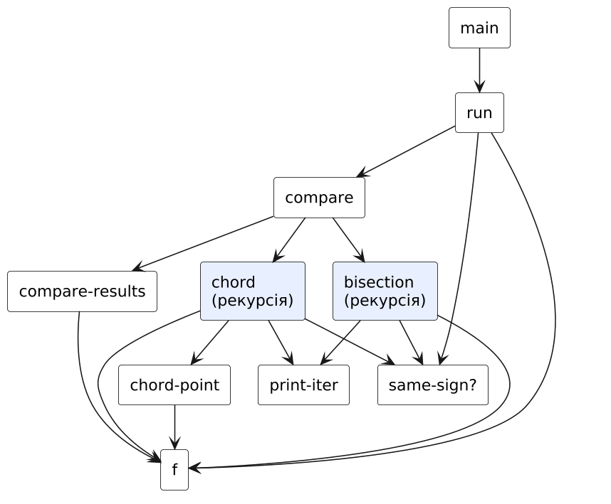
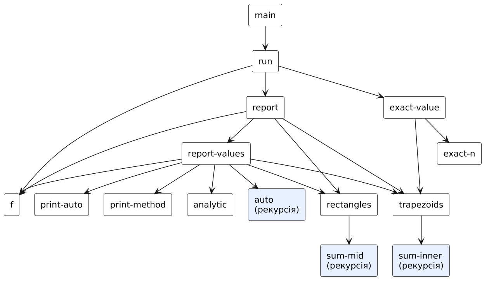

HIPO-діаграма (схема виклику процедур)
Діаграма показує ієрархію викликів процедур (стрілка A → B означає, що A викликає B); блоки з рекурсією виділено. Допоміжні процедури введення даних (ask-…) для наочності опущено.
Задача 3.1: Корінь рівняння x² = e⁻ˣ (бісекція, хорди)

| Процедура | Вхід (Input) | Обробка / вихід (Process → Output) |
|---|---|---|
main | a, b, eps, show? | виклик run |
run / compare | a, b, eps, show? | перевірка наявності кореня, запуск двох методів |
bisection | a, b, eps, i, show? | (корінь, ітерацій) методом бісекції |
chord / chord-point | a, b, eps, i, show?, c-prev | (корінь, ітерацій) методом хорд |
f | x | x² − e−x (lambda) |
compare-results | результати двох методів | порівняльна таблиця |
Задача 3.2: Інтеграл 1/(1+x²): прямокутники й трапеції

| Процедура | Вхід (Input) | Обробка / вихід (Process → Output) |
|---|---|---|
main | a, b, eps, n | виклик run |
rectangles / sum-mid | g, a, b, n | інтеграл методом середніх прямокутників |
trapezoids / sum-inner | g, a, b, n | інтеграл методом трапецій |
auto | method, g, a, b, n, eps | (I, n) за правилом Рунге |
exact-value / analytic | g, a, b | «точне» й аналітичне значення |
report / report-values | параметри | похибки та висновок |